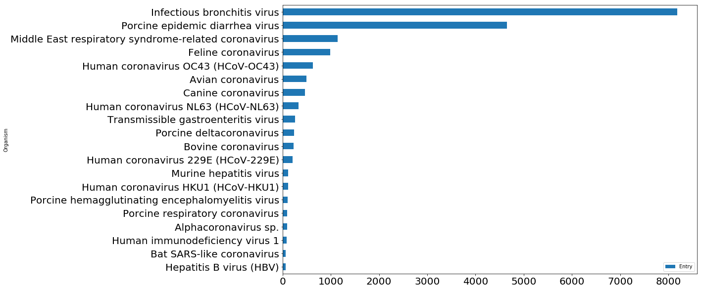
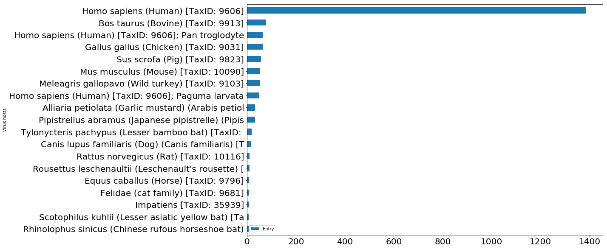

Collecting Proteins and Genes data from Uniprot Database
What is Uniprot Database?
UniProt is a freely accessible database of protein sequence and functional information, many entries being derived from genome sequencing projects. It contains a large amount of information about the biological function of proteins derived from the research literature.source: Wikipedia
Why is this protein list important to current COVID-19 Dataset?
Inorder to gather the information about the biomolecular mechanism from the scientific literature (COVID-19 Dataset), one need to have the list of associated Proteins, Genes, Pathways, Drugs etc. This notebook presents the steps to gather Corona Virus associated proteins, Gene names and associated Pathways from Uniprot database. These lits could be useful to look at the textual documents for further NLP processing and to present the entity relationship.
1. Getting Data
Step -I
Gp to Uniprot Database (https://www.uniprot.org/) and select UniprotKB in search bar. Then inter corona virus into the search bar.

Step -II:
After you hit search operation, you will get a table like disply of the result. It is multi page table.

Step-III:
Look at the right most task bar of this table. You can see pen like icon through which you get next window. You can make a selection of the information you want to gather (e.g., Name, Gene, Pathways).

Step - IV
Once you are done with selection of information, you can go back to previous table and hit download button. You can select the format of the data. Excel file download is one option.

2. Data Wrangling
What After getting Protein Data?
Lets play around with this data
import pandas as pd import matplotlib.pyplot as plt %matplotlib inline file_path = "../input/corona-virus-proteins-from-uniprot-database/corona.csv" df = pd.read_csv(file_path)
df.head(5)
| Entry | Entry name | Status | Protein names | Gene names | Organism | Virus hosts | Pathway | |
|---|---|---|---|---|---|---|---|---|
| 0 | A0A3R5SMJ6 | A0A3R5SMJ6_WNV | unreviewed | Genome polyprotein | NaN | West Nile virus (WNV) | Aedes [TaxID: 7158]; Amblyomma variegatum (Tro... | NaN |
| 1 | M1UFP6 | M1UFP6_9FLAV | unreviewed | Genome polyprotein | NaN | Bovine viral diarrhea virus 1b | NaN | NaN |
| 2 | P11223 | SPIKE_IBVB | reviewed | Spike glycoprotein (S glycoprotein) (E2) (Pepl... | S 2 | Avian infectious bronchitis virus (strain Beau... | Gallus gallus (Chicken) [TaxID: 9031] | NaN |
| 3 | P11224 | SPIKE_CVMA5 | reviewed | Spike glycoprotein (S glycoprotein) (E2) (Pepl... | S 3 | Murine coronavirus (strain A59) (MHV-A59) (Mur... | Mus musculus (Mouse) [TaxID: 10090] | NaN |
| 4 | P0C6X9 | R1AB_CVMA5 | reviewed | Replicase polyprotein 1ab (pp1ab) (ORF1ab poly... | rep 1a-1b | Murine coronavirus (strain A59) (MHV-A59) (Mur... | Mus musculus (Mouse) [TaxID: 10090] | NaN |
There are total 21,876 proteins from different sources
df.shape
(21876, 8)
Q: What are the different Organisms? Can you find the top 50 Organisms?
df_organism = pd.DataFrame(df.groupby("Organism").count()['Entry']) df_organism = df_organism.sort_values(by = "Entry", ascending = False) df_organism[0:20].plot.barh(figsize = [15,10], fontsize =20) plt.gca().invert_yaxis()

df_organism[0:20]
| Entry | |
|---|---|
| Organism | |
| Infectious bronchitis virus | 8184 |
| Porcine epidemic diarrhea virus | 4657 |
| Middle East respiratory syndrome-related coronavirus | 1139 |
| Feline coronavirus | 983 |
| Human coronavirus OC43 (HCoV-OC43) | 630 |
| Avian coronavirus | 497 |
| Canine coronavirus | 463 |
| Human coronavirus NL63 (HCoV-NL63) | 333 |
| Transmissible gastroenteritis virus | 258 |
| Porcine deltacoronavirus | 235 |
| Bovine coronavirus | 225 |
| Human coronavirus 229E (HCoV-229E) | 210 |
| Murine hepatitis virus | 111 |
| Human coronavirus HKU1 (HCoV-HKU1) | 110 |
| Porcine hemagglutinating encephalomyelitis virus | 104 |
| Porcine respiratory coronavirus | 98 |
| Alphacoronavirus sp. | 90 |
| Human immunodeficiency virus 1 | 81 |
| Bat SARS-like coronavirus | 66 |
| Hepatitis B virus (HBV) | 66 |
Q: What are the different Viral hosts? Can you find top Virus hosts?
df['Virus hosts'] = df['Virus hosts'].apply(lambda x: str(x)[0:50] ) df_host = pd.DataFrame(df.groupby("Virus hosts").count()['Entry']) df_host = df_host.sort_values(by = "Entry", ascending = False) df_host[1:20].plot.barh(figsize = [15,10], fontsize =20) plt.gca().invert_yaxis()

df_host[1:20]
| Entry | |
|---|---|
| Virus hosts | |
| Homo sapiens (Human) [TaxID: 9606] | 1385 |
| Bos taurus (Bovine) [TaxID: 9913] | 78 |
| Homo sapiens (Human) [TaxID: 9606]; Pan troglodyte | 66 |
| Gallus gallus (Chicken) [TaxID: 9031] | 64 |
| Sus scrofa (Pig) [TaxID: 9823] | 57 |
| Mus musculus (Mouse) [TaxID: 10090] | 54 |
| Meleagris gallopavo (Wild turkey) [TaxID: 9103] | 51 |
| Homo sapiens (Human) [TaxID: 9606]; Paguma larvata | 50 |
| Alliaria petiolata (Garlic mustard) (Arabis petiol | 33 |
| Pipistrellus abramus (Japanese pipistrelle) (Pipis | 32 |
| Tylonycteris pachypus (Lesser bamboo bat) [TaxID: | 19 |
| Canis lupus familiaris (Dog) (Canis familiaris) [T | 16 |
| Rattus norvegicus (Rat) [TaxID: 10116] | 11 |
| Rousettus leschenaultii (Leschenault's rousette) [ | 11 |
| Equus caballus (Horse) [TaxID: 9796] | 9 |
| Felidae (cat family) [TaxID: 9681] | 9 |
| Impatiens [TaxID: 35939] | 9 |
| Scotophilus kuhlii (Lesser asiatic yellow bat) [Ta | 7 |
| Rhinolophus sinicus (Chinese rufous horseshoe bat) | 7 |
3. Cleaning Protein Names, Synonyms and abbreviations
def filter(line): proteins = set() line = str(line) line = line.lower() '''for lines without () or [] terms''' if "(" not in line or "[" not in line: proteins.add(line.strip().replace(' ', '_')) '''for line including () terms''' if '(' in line: start = 0 open_in = line.find('(') tmp = line[start:open_in].strip().replace(' ', '_') proteins.add(tmp) while open_in >=0: start = open_in+1 end = line.find(')', start) proteins.add(line[start:end].strip().replace(' ', '_')) open_in = line.find('(', end) '''for lines including [] trems''' if '[' in line: raw = line[line.find('['):line.find(']')] #print("THIS IS RAW:", raw[15:-1]) raw = raw[15:-1] lraw = raw.split("; ") for item in lraw: #print(item) if '(' in item: start = 0 open_in = item.find('(') tmp = item[start:open_in].strip().replace(' ', '_') proteins.add(tmp) else: proteins.add(item.strip().replace(' ', '_')) return proteins
allProteins = [] i = 0 for u,p in zip(df['Entry'],df['Protein names']): print(u,"|",p) print("------------") print(u,"|",filter(p)) print("===================================================") i += 1 if i>4: break
A0A3R5SMJ6 | Genome polyprotein
------------
A0A3R5SMJ6 | {'genome_polyprotein'}
===================================================
M1UFP6 | Genome polyprotein
------------
M1UFP6 | {'genome_polyprotein'}
===================================================
P11223 | Spike glycoprotein (S glycoprotein) (E2)
(Peplomer protein) [Cleaved into: Spike protein S1;
Spike protein S2; Spike protein S2']
------------
P11223 | {'peplomer_protein', 'spike_protein_s1',
'e2', 'spike_protein_s2', 'spike_glycoprotein',
's_glycoprotein'}
===================================================
P11224 | Spike glycoprotein (S glycoprotein) (E2)
(Peplomer protein) [Cleaved into: Spike protein S1;
Spike protein S2; Spike protein S2']
------------
P11224 | {'peplomer_protein', 'spike_protein_s1',
'e2', 'spike_protein_s2', 'spike_glycoprotein',
's_glycoprotein'}
===================================================
allProteins = [] for u,p in zip(df['Entry'],df['Protein names']): allProteins.append({"id":u, "names":list(filter(p))})
allProteins[0:5]
[{'id': 'A0A3R5SMJ6', 'names': ['genome_polyprotein']},
{'id': 'M1UFP6', 'names': ['genome_polyprotein']},
{'id': 'P11223',
'names': ['peplomer_protein',
'spike_protein_s1',
'e2',
'spike_protein_s2',
'spike_glycoprotein',
's_glycoprotein']},
{'id': 'P11224',
'names': ['peplomer_protein',
'spike_protein_s1',
'e2',
'spike_protein_s2',
'spike_glycoprotein',
's_glycoprotein']},
{'id': 'P0C6X9',
'names': ['m-pro',
'nsp16',
'nsp7',
'exon',
'nsp14',
'nsp10',
'guanine-n7_methyltransferase',
'ec_3.4.22.-',
'nendou',
'non-structural_protein_3',
'non-structural_protein_2',
'ec_2.1.1.-',
"2'-o-methyltransferase",
'hel',
'pol',
'ec_3.6.4.13',
'growth_factor-like_peptide',
'non-structural_protein_7',
'gfl',
'ec_3.4.22.69',
'p22',
'p27',
'non-structural_protein_9',
'orf1ab_polyprotein',
'nsp4',
'uridylate-specific_endoribonuclease',
'3cl-pro',
'pp1ab',
'p65',
'host_translation_inhibitor_nsp1',
'p15',
'nsp1',
'ec_3.6.4.12',
'nsp2',
'ec_2.7.7.48',
'p67',
'nsp12',
'peptide_hd2',
'nsp5',
'p210',
'rdrp',
'nsp9',
'p100',
'nsp3',
'nsp8',
'non-structural_protein_6',
'rna-directed_rna_polymerase',
'p35',
'3c-like_proteinase',
'papain-like_proteinase',
'ec_3.1.13.-',
'non-structural_protein_4',
'pl-pro',
'3clp',
'p12',
'non-structural_protein_10',
'p28',
'non-structural_protein_8',
'helicase',
'nsp6',
'nsp13',
'nsp15',
'p44',
'ec_3.1.-.-',
'replicase_polyprotein_1ab',
'ec_3.4.19.12',
'p10']}]
import json with open("virus-proteins.json", 'w') as fn: json.dump(allProteins,fn)